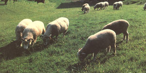
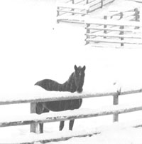

Country Vet
As the winter season is upon us, I hope that peace and joy of the holidays fill this season for you and your family. I thought I'd start off this issue with a note about dairy cows and calving since of late I have been receiving quite a few questions on the subject. Folks commonly ask where calf respiratory and gastrointestinal problems like cough and diarrhea come from. Although there are a variety of ways that farmers manage their farms and even more tricks of the trade for producing the best calves, techniques seem to boil down to a few critical conditions that are basic to getting a healthy calf.
Most of us realize that babies are only as healthy as moms are. That's why the heifer or cow has to be as fit as possible prior to breeding or insemination and what's more, has to be kept healthy throughout her gestation. First-milking colostrum from the cow provides vitamins, minerals, energy, and proteins for the calf. The most important of these proteins are antibodies, which protect the calf until its own im mune system is fully working (at about two months of age). The colostrum has to be healthy, which is why proper care of the quarters is so important (and hence, why mastitis can pose such a lethal threat to the farmer's breeding operation) and why the cow's own immune system has to be up to par, via proper immunization, discriminate use of antibiotics, and clean environment.
Whenever possible use clean, well drained pasture for calving, except in extremely harsh weather conditions (frigid temps, severe wind chill). However, when pasture isn't available, you can use individual pens or box stalls provided they are dry and adequately ventilated. Use dry straw or shavings, preferably the former, as bedding on top of disinfectant-cleaned concrete. Clean the pens between each calving to minimize the possibility of contamination to both cow and calf during the birthing process. Allow the cow to remain part of the herd as long as possible, undergoing the same routine day to day until the farmer judges her ready to freshen. This is a crucial judgment call on the part of the farmer and hopefully, will allow him or her to place the cow in the calving stall no sooner than two to three days at the most prior to calving. Numerous studies have shown that healthier calves are born when farmers keep the cow out of the calving pen until three days prior to calving and clean the pens after every or every other calving. Use of free stalls, tie stalls or stanchions permits greater bacterial contamination and thus results in greater calving problems for both the calf and dam.
Disinfecting the navel cord with a strong tincture of iodine (not teat dip) directly after calving will inhibit microbial migration into the calf's body and help dry/shrink the cord. Feeding on colostrum within the first 24 hours of birth is very important for the newborn. After 24 hours, the intestine is no longer permeable to macromolecules, so colostrum fed as soon as possible (first two hours) is much more beneficial for the calf. Also, feeding large amounts of colostrum will not help if the calf's gastrointestinal tract has already been contaminated prior to feeding it. Therefore, once again, try to limit bacterial entrance into the mouth and nose of the newborn thorough farm hygiene.
Lastly, during the birth process the newborn and the calving stall become contaminated with bacteria and other organisms from the mother's reproductive tract. Simply remove the calf from the calving area shortly after birth to reduce any lengthy exposure to these pathogens in the calving area.
I own a small flock of sheep, most of whom have some form of bottle jaw. This is pretty upsetting, given the fact that we deworm on a regular basis. What could be the problem?
-Vincent Montgomery
Shelby, CA
Dear Vincent:
Internal parasites pose a greater problem in sheep than in most other species. Certain parasites cause a protein loss which causes the accumulation of fluid under the skin of the lower jaw. This is known as "bottle jaw," and occurs for two major reasons. First, lambs do not develop immunity to certain parasites until nine months of age, which leaves a great deal of time for infection in the youngster.
Second, lactating ewes pass a large number of eggs during lactation, which is a major source of pasture contamination and perinatal infection. Other signs of parasitism are weight loss, weakness, and simple poor growth.
Treatment of parasites involves using drugs known as anthelmintics, or dewormers. Several dewormers are approved for use in sheep, as long as withdrawal times are monitored with great care. The effectiveness of each of the dewormers depends on the specific type of parasite present, its life cycle, and degree of medicinal resistance. Resistance of organisms, parasite, viral and bacteria, has become a ubiquitous problem. It occurs when some susceptible parasites are killed by a drug, leaving other ones (resistant) to reproduce. Resistance is common when dewormers are used in low dose on a regular basis, when the deworming drug is not as effective (shelf date) as it used to be, or when the flock is not all treated at the same or appropriate time. It is important to sort sheep by size before deworming and probably dose according to the heaviest animal vs. the lightest. Given the fact that most dewormers have a large safety margin, better to overdose the smallest animal than to underdose the largest. Also, treat the flock before they are turned out to pasture. The "treat and move" technique is good as long as you treat, wait a week-ten days, and then move to allow time for the treatment to take effect. Do not rotate anthelmintics frequently, but rather when one doesn't appear to be working, try another. Try rotating pastures and deworming ewes mid-winter with something effective against developing larvae which arrest in the ewe waiting for spring to arrive and reinfect pasture and kid.
My quarter horse gelding is getting on in years and we want to know how old is too old. What can we do for 13-year old Jake to keep him healthy?
-Charlene Stills
Leesville, Ohio
Dear Charlene:
It was unusual until recently for veterinarians and lay folk alike to pay much attention to the geriatric equine patient. When horses had lived beyond their usefulness as showing, working, or breeding animals, they were usually retired out to pasture to quietly fade away. We now know, however, that many horses live healthy and useful lives, some even up to the age of 25-30 years. Advances in veterinary medicine have made it possible for horses to live comfortably despite the aging process that is similar for all animals, including us. The body systems that are hardest hit in old age are the musculoskeletal, cardiac, special senses, gastrointestinal and glandular.
Good farm management is a must for maintaining the older equine patient. Owners must strive to maintain a clean and stress free environment. Room to exercise, fresh air or good ventilation, adequate sun, ready access to water, and decent hays/grains are most important. Dust free bedding is also necessary as the incidence of chronic respiratory disease (heaves, pneumonia, pleuritis) increases with age. You should pay special attention to the feet of older horses. If you keep them outdoors, it's important to check frequently for sole bruises or cracks. If you keep them stalled, clean both stall and feet often and examine shoes every week for fit and comfort.
Groom daily or every other day. This not only makes the horse feel good as there's evidence that it stimulates various acupressure points resulting in release of the body's own pain relievers, but is a good chance for the owner to observe the animal on a regular basis. Keep an eye on general body condition and make sure to check this in long-haired or winter coat horses. Long hair can make a twig of a malnourished horse look quite healthy. Look for signs of appetite problems, like partially chewed feed, which can signal dental problems, or changes in manure. Attitude and behavior changes can signal many diseases before the actual symptoms
Andrea Looney, DVM, offers her experience in caring for cows, calves, horses and sheep. come along. Behavior changes may also indicate the need for a closer look at the horses sight and hearing capabilities.
It is more difficult to maintain body weight in older horses, and even more difficult to put weight on a debilitated older animal. This is mostly because the gastrointestinal tract itself undergoes changes, some normal and some pathologic, from dental problems such as tooth loss or abnormal wear, including oral problems, to increased parasitisms from lowered immune resistance. However, more animals are being diagnosed with thyroid or pituitary disease, or heart and kidney disease, both of which may lead to appetite suppression.
Many older horses may benefit from additional energy in their foods, modified protein levels, or vitamins. Use the later judiciously because there isn't much scientific evidence of benefits great enough to justify oversupplementation with vitamins or minerals in the geriatric horse or pony. Any signs of weight loss, or condition change should trigger an evaluation of feeds and housing, routine deworming, and then a physical exam with special emphasis on teeth, endocrine (thyroid), heart, respiratory system, feet, and musculoskeletal system. Some veterinarians suggest such exams, including routine electrolyte and chemistry values, performed twice annually for our older patients.
How do veterinarians check for ammonia levels in dairy barns? Is there a scientific method and what are some guidelines for ventilating?
-Carl Clarkson
Centralia, WA
Dear Carl:
Environment plays a key role in herd health, and a buildup of airborne pathogen concentrations and noxious gas levels can predispose animals to many respiratory diseases, the biggest of which is pneumonia. The possibility of disease is influenced by animal density, room temperature, relative humidity, and the rate and pattern of ventilation. Ventilation is a difficult thing to measure but you can assess it using a smoke generator at the air entry point to visualize the pattern of ventilation. There should be no mixing or backward flow of exhaust air. And the smoke, like fresh air, should reach all animals.
Next, you can use an instrument called an anemometer to measure airflow speed. Most recommended velocities for input air are about 300-800 feet per minute, but specific recommendations vary depending on the system. In cold weather, you may reduce the airflow substantially, but in warm weather and humid areas, you should maintain airflow at the higher end of its range and move animals to barn areas which accommodate higher flows. The idea is to prevent humidity buildup. You can calculate airflow per animal if you know the airflow at exhaust vents and this allows a much better idea of airflow you need for the entire barn.
Finally, toxic gas detector kits measure the temperature, relative humidity and ammonia concentrations at several heights of animals and at several locations in the barn. Most infectious organisms cannot survive if you maintain the mean barn temperature between 45 and 75°F. More importantly, however, is maintaining the humidity between 50 and 80 percent and keeping the ammonia levels to a minimum. Ammonia levels should be no more than 20 ppm.
Do shorter days affect horses? It's rumored throughout the horse community that youcan leave some lights on through the winter months and increase the activity of your old nag? Is this true?
- Zelma Thomas
Chapelville, GA
Dear Zelma:
Combined with temperature signals, day length influences dormancy of certain body systems, most notably the reproductive system, causing changes in the activity level, the hair coat, and to a lesser extent, behavior. A small organ near the base of the brain called the pineal gland, modulates biological rhythms. Often called the inner eye, this gland receives input from the outside world and relays it via hormonal signals to the master gland, the pituitary. The pituitary in return issues more hormonal messages to the rest of the body, telling it to change accordingly with the decrease in light hours or daylight, or with changes in temperature.
While it's true that you can fool the pineal gland with artificial light during the winter months, the regimen has to be consistent and lengthy. Many farms do this to avoid interference with breeding or showing, or to jump start their mares' reproductive systems in the winter. The animals must be exposed to 15-16 hours of light a day, seven days a week, at high wattage placed an appropriate length above the animal's head (six to eight feet) starting late November or early December. The animals have to be in encompassing light as well, meaning no dark corners or boards to hide under. Anxiety levels may wax and wane and there are certain downfalls with bringing on summer in the winter-among them overexertion, early exercise burn-out, and altered reproductive or heat cycles throughout the rest of the year.
Dr. Looney would beglad to answer your questions regarding animal health. Send them to: "Country Vet," c/oMOTHEREARTHNEWS PO. Box 129, Arden NC 28704. Send us a photo too!
|
|
 |
 |